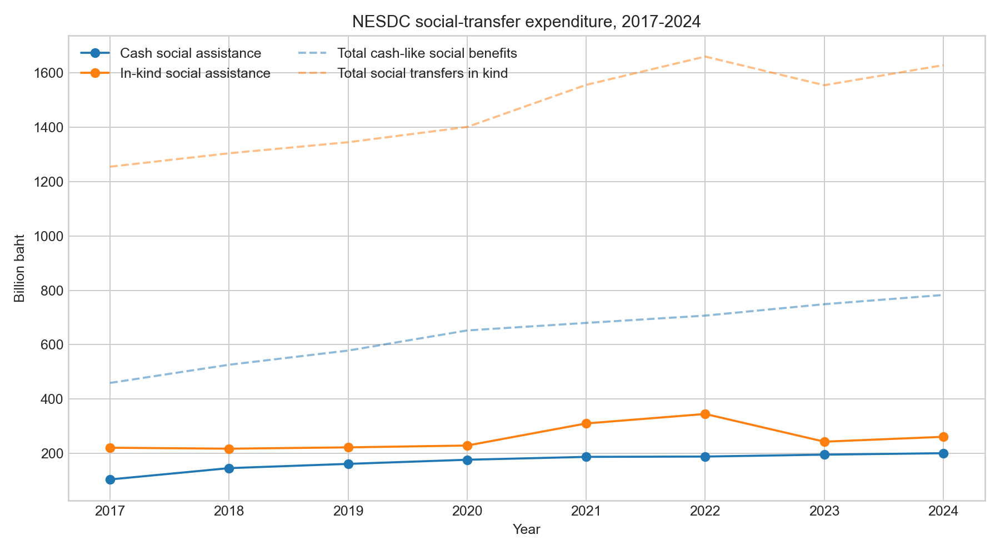
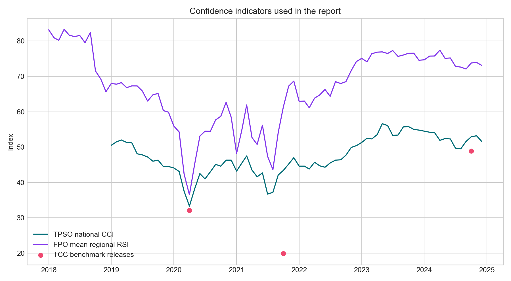
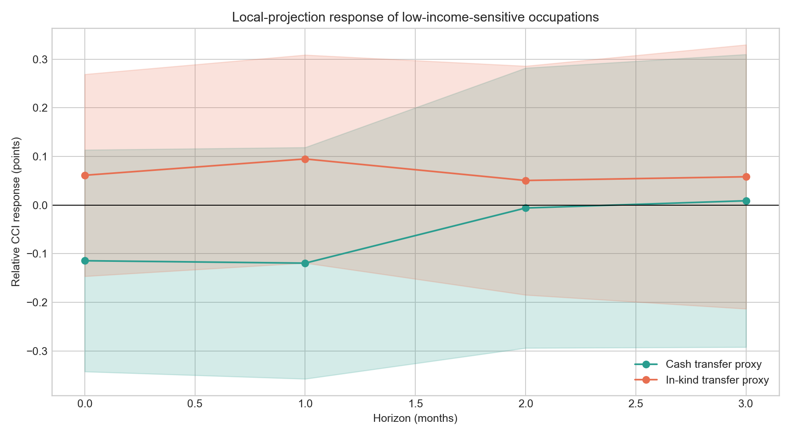
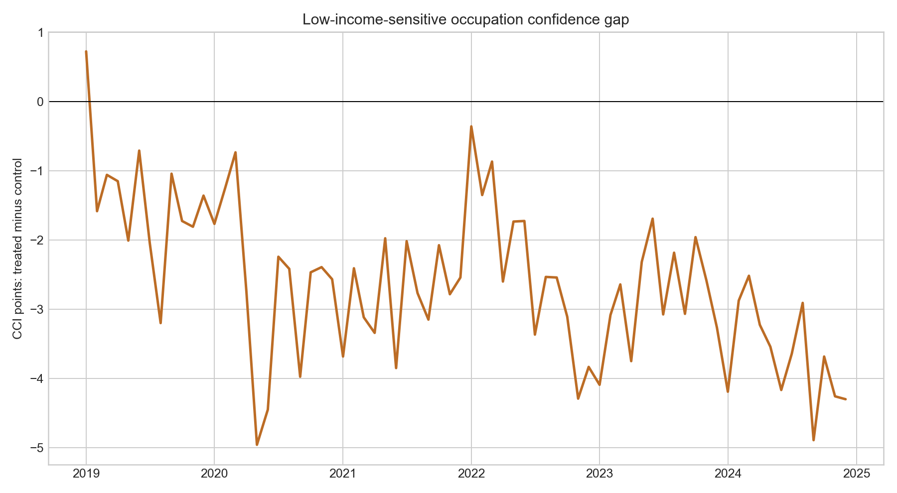

Scale
Thailand's social-transfer envelope expanded materially over the period, with cash-focused support becoming larger and more durable over time.
NESDC • FPO • BOT • TCC • TPSO
A professional presentation of the 2017-2024 report, focused on how cash and in-kind fiscal support interacted with household sentiment, especially for low-income groups.
Executive synthesis
Thailand's social-transfer envelope expanded materially over the period, with cash-focused support becoming larger and more durable over time.
The sharpest confidence turning points align with COVID relief, reopening support, and the 2024 vulnerable-group handout.
High-transfer months did not fully close the confidence gap between low-income-sensitive occupations and better-insulated groups.
Cash is fast. In-kind support appears more important for the medium-term confidence outlook of vulnerable households.
Fiscal trend
The clearest structural shift between 2017 and 2024 was the rise of cash assistance aimed directly at households, while in-kind support became more crisis-sensitive because of health spending and cost-of-living relief.
Cash social assistance nearly doubled across the full sample.
In-kind social assistance surged in the pandemic and then normalized as emergency health spending faded.
The vulnerable-group handout created the highest monthly cash intensity in the full policy calendar.

Confidence cycle

The overlap correlation between TPSO national confidence and the FPO regional measure is 0.94, so the two sources tell a highly consistent macro story.
Econometric evidence
Model A
Using monthly changes in aggregate confidence, the model shows that cash-heavy months are most visible in TPSO's household confidence series, while in-kind intensity stands out more clearly in the FPO regional sentiment series.
90% CI: 0.15 to 0.69
90% CI: -0.47 to 0.78
90% CI: -0.46 to 0.70
90% CI: 0.07 to 3.06
Model B
With month fixed effects absorbing common shocks, the model isolates whether low-income-sensitive occupations respond differently from better-insulated groups during high-transfer months.
Relative confidence gap widens in cash-heavy months
Mildly positive, but less precise
Positive but imprecise in the future-expectation panel
90% CI: 0.03 to 0.61
Model C
The dynamic path suggests that distributional effects are modest in the short run for aggregate occupation confidence, but in-kind relief remains directionally more supportive.

Cash: -0.11, In-kind: 0.06
Cash: -0.12, In-kind: 0.09
Cash: -0.01, In-kind: 0.05
Cash: 0.01, In-kind: 0.06
Low-income lens
Cash-heavy months aligned with stronger headline confidence moves, especially in the national TPSO series. That makes cash a credible tool for quick macro support and shock absorption.
Predictable in-kind relief such as health, utilities, and living cost support appears more helpful for the future outlook of low-income-sensitive occupations.

Policy timeline
The system moved toward more direct household support and built the platform for later scale-up.
Rapid cash stabilization and utility support corresponded to one of the sharpest changes in monthly transfer intensity.
Cash and reopening support dominated early in the year, followed by a larger in-kind health push during vaccination and recovery.
In-kind social assistance reached its high point as pandemic-era health and welfare spending remained elevated.
The September-November handout created the highest monthly cash intensity in the policy calendar.
Research design
NESDC annual social-assistance totals define the true fiscal scale in each year from 2017 to 2024.
A monthly calendar allocates those annual totals using the timing of cash-heavy and in-kind-heavy stimulus periods.
The site summarizes aggregate regressions, occupation-level TWFE, and local projections with clustered and HAC-style uncertainty handling.
Monthly econometrics begins in January 2019 because that is where the usable TPSO panel starts. FPO regional sentiment starts in January 2018.
Downloads & source files
Full report with equations, charts, and detailed model notes.
DOCX Thai reportThai translation with the same empirical structure and findings.
DOCX Thai modern briefContemporary policy-brief styling for formal presentation use.
DOCX Thai editorial premiumA softer longform layout for executive or publication contexts.
CSV NESDC social transfersAnnual transfer series used to anchor the fiscal story.
CSV Policy intensity calendarMonthly proxy construction file with fiscal timing weights.